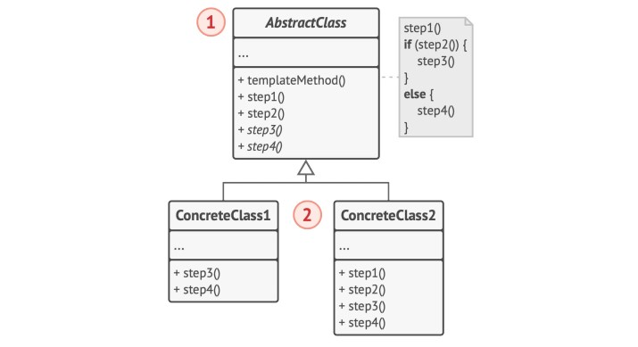

Singleton es un patrón que nos permite asegurarnos que solo exista una y solo una instancia de una determinada clase, la cual provee un acceso global.
Todas las implemtaciones del patrón tienen estos dos pasos:
newclass Recomendador { private static Recomendador INSTANCE; private Recomendador() { } public static Recomendador getInstance() { if (INSTANCE == null) { INSTANCE = new Recomendador(); } return INSTANCE; } }
Con el patrón Factory Method se consigue una interfaz fábrica la cual implementa un Template Method que permite instanciar objetos polimórficos segun nuestras necesidades, cambiando en momento de ejecución la fábrica concreta que necesitemos.
Un ejemplo podría ser una fábrica de enemigos segun la dificultad:
interface EnemyFactory { createEnemy(); } class EasyEnemyFactory implements EnemyFactory { createEnemy() { return Insua; } } class DifficultEnemyFactory implements EnemyFactory { createEnemy() { return Piñeiro; } }
La Factory estaría como atributo en alguna clase que maneje la lógica de los niveles del juego y se podría cambiar en momento de ejecución porque esta utilizando composición
Este patrón nos permite crear familias de objetos polimórficos.
En este caso, las sillas modernas y las victorianas implementan la misma interfaz silla y así lo hacen los demas muebles.
Esta Factory al igual que en Factory Method puede cambiarse en momento de ejecución desde una clase que la implemente.
Un Builder nos ayuda a construir objetos complejos paso a paso, evitando errores y dando un resultado firme. Permite producir distintos "modelos" del mismo objeto empleando el mismo código de construcción.
El patrón Prototype sirve para copiar un objeto y generar una nueva instancia del mismo.
El patrón hace que los objetos implementen una interfaz común la cual cuenta con el método clonar. Gracias a este mismo, se le delega a los objetos la responsabilidad de clonarse a si mismos, generando un nuevo objeto idéntico a ellos mismos.
El patrón strategy se utiliza para conseguir extraer del contexto las diferentes estrategias variables que existen, utilizando polimorfismo para poder ejecutarlas y manteniendo código mas limpio y mas facil de extender y mantener.
Al usar composición permite cambiar de estrategia en tiempo de ejecución.
Es muy útil para evitar los "Type Tests".
class Maestro { Elemento elemento; setElemento(Elemento nuevoElemento) { elemento = nuevoElemento; } atacar() { elemento.atacar() } } class Agua implements Elemento { atacar() { return tormentaDeAgua; } } class Fuego implements Elemento { atacar() { return bolaDeFuego; } }
La idea del patrón template, es justamente crear una plantilla en una clase abstracta principal para que luego sea compatible con las subclases que implementan sus métodos polimorficamente. Trabaja con herencia a diferencia de Strategy que lo hace con composición.
En general se trata de dividir el "algoritmo" que se quiere usar como plantilla en pasos e implementar esos pasos como métodos que luego serán sobreescritos.
Existen pasos abstractos que tienen que ser implementados si o si por las subclases y tambien pasos opcionales que ya tienen comportamiento por defecto que puede ser común a la mayoría de los casos (igualmente pueden sobrescribirse)

El patrón Command sugiere que las llamadas a un cierto objeto no se hagan directamente sobre los componentes lógicos del sistema, sino que se extraigan todos los detalles de la llamada, el objeto, el método y sus argumentos, para ser colocados dentro de una clase Comando con un único método que activa esta llamada.
Da la posibilidad de tratar a todas las llamadas de forma polimórfica y poder tratarlas de forma indistinta entre sí.
El parcial de HitBug realiza esto para las modificaciones a los Bags, realiza una interfaz Modificacion para representar estas llamadas y las incluye dentro de un Hit.
class Hit { List<Modificacion> modificaciones; realizarSobre(unBag) { modificaciones.forEach(modificacion :: realizarSobre(unBag)); } } interface Modificacion { realizarSobre(unBag); } class cambiarNombre implements Modificacion { String viejoNombre; String nuevoNombre; realizarSobre(unBag); } class agregarContenido implements Modificacion { Contenido contenido; realizarSobre(unBag); }
El patrón Observer permite definir un mecanismo de suscripción a un objeto para poder ser notificado ante un cambio deseado.
Los objetos que observan deben ser añadidos a la clase observada, para desde allí poder notificar cuando ocurra el cambio. Deben tambien implementar el método para ser notificados desde fuera.
class Instagram { List usuarios; agregarUsuario(usuario) { usuarios.add(usuario); } notificarUsuarios() { usuarios.forEach(usuarios :: notificar()); } } class Usuario { notificar() { return "notificado!"; } }
El patrón composite se maneja siempre en una estructura de árbol, donde existen siempre elementos simples u hojas y elementos complejos o nodos los cuales contienen demas elementos simples o complejos.
La idea principal es tener una interfaz Componente para manejar polimórficamente a las hojas y a los nodos, donde los nodos puedan delegar el trabajo a sus hijos y las hojas puedan realizarlo.
El nodo debe tener métodos para agregar o eliminar hijos